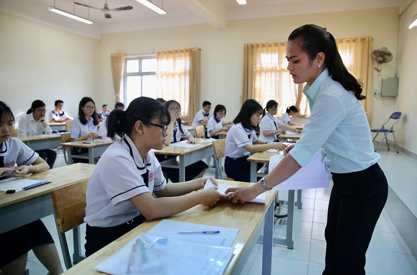

Số thí sinh đăng ký xét tuyển ĐH-CĐ giảm so với năm 2019
Do tình hình dịch bệnh Covid-19 ảnh hưởng đến thời gian thi tốt nghiệp THPT, kỳ thi được lùi đến ngày 09-10/08 chậm hơn so với mọi năm. Học sinh lớp 12 phải làm ba bài bắt buộc gồm Toán (90 phút), Ngữ văn (120 phút), Ngoại ngữ (60 phút) và một bài tự chọn là Khoa học tự nhiên hoặc Khoa học xã hội (mỗi môn thành phần trong bài tự chọn thi trong 50 phút). Thí sinh tự do được dự thi các bài độc lập, bài thi tổ hợp hoặc môn thi thành phần của bài tổ hợp theo nguyện vọng để xét tuyển vào các trường Đại học, Cao đẳng.
Dự kiến kết quả thi tốt nghiệp THPT được công bố chậm nhất vào ngày 01/09. Bộ GD&ĐT sẽ công bố ngưỡng đảm bảo chất lượng đầu vào khối ngành đào tạo giáo viên và sức khỏe trước ngày 07/09. Trước ngày 08/09, các trường điều chỉnh, công bố mức điểm nhận hồ sơ xét tuyển trên Cổng thông tin tuyển sinh của Bộ và trang thông tin điện tử của trường.
Từ ngày 09/09 đến 17h ngày 18/09, thí sinh chỉ được điều chỉnh đăng ký xét tuyển một lần duy nhất theo phương thức trực tuyến hoặc bằng phiếu. Thí sinh chỉ được điều chỉnh đăng ký xét tuyển một lần. Các trường Đại học, Cao đẳng sẽ công bố điểm chuẩn trước 17h ngày 27/09